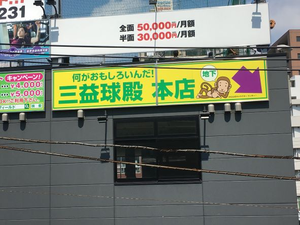
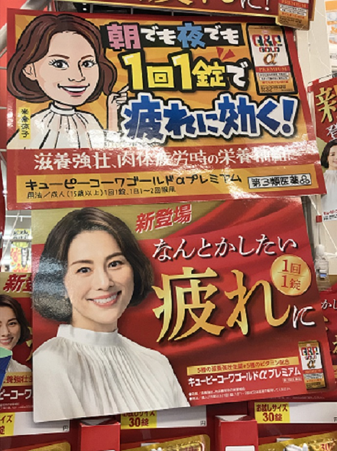
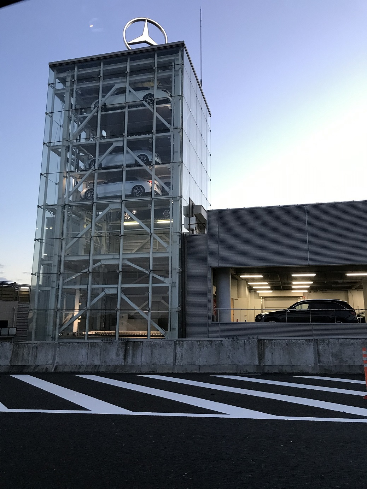

デザイン演習第二回。街でみつけた不思議な看板。
①何がおもしろいんだ！

8月28日黄金町の駅のホームから撮影。
おそらくバッティングセンターの広告なんだろうけど、
打ち込み間違えた？と疑ってしまいたくなる広告。
自分で存在意義に問いかけちゃってどうするの。。。（困惑）
②いかにもドンキらしい？？

１０月９日新横浜のドン・キホーテにて撮影。
ドンキといえばド派手な手書きPOPで有名ですよね。
でも、これ本家の宣伝張ってるのに、米倉涼子書く必要あった？
と首をかしげたくなる広告でした笑
たぶん、担当の人が描きたかったんでしょうね。。。ドンキらしい。
③ウナギが匂いで売るならクルマは。。。。

１０月１１日、国道１６号線、町田市内を走行中に撮影。
１６号線を相模原方面へ走ったことがある人は一度は見たことがあるでしょうか？
かの高級車、メルセデスベンツの中古車販売店。
国道沿いに面した、在庫車を駐車するエレベーターは透けており、
外からクルマが見える状態に。その上には
メルセデスのエンブレム”スリーポインテッドスター”が回転しておりました！
実際にこの車を見て購入する方もいらっしゃるそう。
さながら匂いで釣るうなぎ屋ですね汗
よくよく見ていると店側が売りたいであろうクルマには、照明が浴びされておりますね！